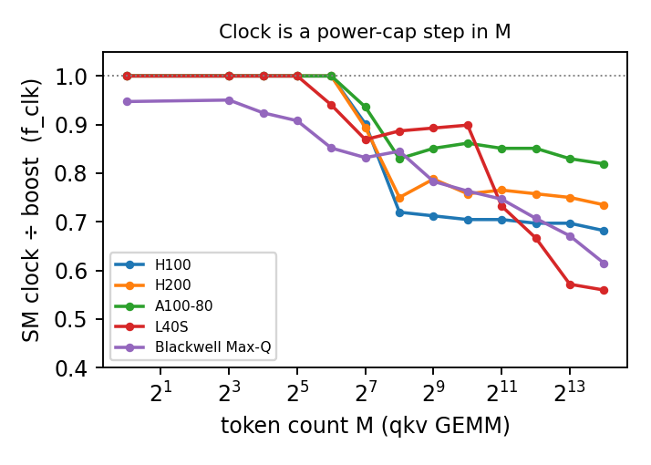

1. Why the clock can no longer be treated as a constant
A performance model for LLM serving must answer one recurring question: for a projection matrix multiply of a given size, how many TFLOP/s will the GPU actually deliver?
1.1 Why now
Until recently, the boost-clock assumption was a tolerable approximation. The 2024–2026 deployment picture is different: long-context prefill drives the GEMMs compute-bound, and power-constrained parts (L40S, Max-Q Blackwell) now carry a large share of inference.
1.2 One concrete trace: where the boost-clock roofline breaks
Consider the qkv projection of Llama-3.1-8B on an H200-SXM as token count $M$ grows. A roofline calibrated where the clock genuinely was at boost predicts 908 TFLOP/s at $M{=}16384$; the card delivers 668 — systematically high by $1/\fclk = 1.36$.
1.3 The obvious fix, and why it only hides the error
The natural fix — fit a single per-GPU ceiling $\etabar$ at large $M$ — appears to work, and that is the trap: the rising geometric efficiency cancels the dropping clock, so the ceiling has quietly folded the calibration-time clock into a constant that breaks when the deployment moves.
1.4 The fundamental obstacle
The sustained clock is neither a fixed silicon property nor a free control input — it is an involuntary, power-cap-gated function of problem size $M$. A single number cannot represent a quantity that changes with $M$; the clock must enter the model as a factor, recovered by measurement.
1.5 Where this sits relative to prior work
Prior work treats the clock as a control input (DVFS schedulers, POLCA) or sweeps an imposed cap at fixed $M$ (Ujeniya, GROMACS). The nearest neighbours (Ma, Maliakel) study decode or fixed clock levels. None models the involuntary, $M$-dependent droop inside compute-bound throughput.
2. Contributions and headline results
Having walked through the pain, here is what the measurement and decomposition add — deliberately a measurement-and-decomposition study, not a predictive clock model.
C1 · A cross-SKU measurement
Five GPUs, four projections, default DVFS: the sustained SM clock is a power-cap-gated step in token count — an 18–44% droop on qkv.
C2 · The decomposition
Writing $\etac = \fclk \cdot \etanoclk$ pulls the run-state clock factor out as an explicit term, separated from the geometric efficiency prior ceilings conflate it with.
C3 · Compute-bound throughput declines
On power-constrained GPUs, achieved TFLOP/s falls with size once geometric efficiency saturates (L40S −15%, Blackwell −3%) — proven $M$-driven by two controls.
C4 · A quantified modeling cost
The roofline error is exactly $1/\fclk$, and a calibrated ceiling's non-transferability is precisely the absorbed $\fclk$ — recoverable by one cheap clock reading.
3. The decomposition: pulling the clock out
The whole argument rests on separating the part of efficiency the clock controls from the part the kernel geometry controls.
Here $P_{\mathrm{boost}}$ is the datasheet tensor peak and $\etac$ is the compute efficiency a mechanism model would otherwise fit as a single ceiling. Pulling $\fclk$ out is what makes the clock attributable and transferable.
How $\etac$ enters the full per-step latency
Equation (1) is the compute efficiency of ONE operator class; the companion serving-latency predictor places it in the full per-step time:
This paper characterizes one quantity in (1′): $\etac = \fclk\,\etanoclk$, which prices the compute branch of $t_{\mathrm{proj}}$. The memory branch ($\eta_{\mathrm{mem}}$), attention ($t_{\mathrm{attn}}$), light/LM-head, the launch floor, the host leak $\alpha S(N)$, and sampling are the companion's scope (§8). Ignoring the clock inflates the $t_{\mathrm{proj}}$ compute branch by exactly $1/\fclk$ (§7), which flows straight to $t_{\mathrm{step}}$ on a $t_{\mathrm{proj}}$-dominated prefill step.
3.1 The clock factor $\fclk$
The clock factor $\fclk = f_{\mathrm{sustained}}/f_{\mathrm{boost}}$ is a pure run state, set by the board power controller and cooling, measurable in seconds. Because it is a deployment property, a single per-GPU reading re-levels it.
3.2 The geometric efficiency $\etanoclk$
$\etanoclk = \eta_{\mathrm{cluster}}\,\eta_{\mathrm{active}}\,\eta_{\mathrm{duty}}$ is SM fill × tile-tail duty × tensor-pipe duty. These are geometric and stable across power states — they depend on the matrix shape, not the cap or temperature.
Why the two factors transfer differently — and why that matters
The factorization pays off because the two factors transfer differently: $\etanoclk$ transfers by computation, $\fclk$ by one measurement per operating point. A fused $\etabar$ inherits the worse of both — neither computable nor re-levellable.
3.3 Computing the geometry — $\eta_{\mathrm{cluster}}$ by hand, $\eta_{\mathrm{duty}}$ by the roofline
$\eta_{\mathrm{cluster}}$ is computed from the launch grid; $\eta_{\mathrm{duty}}$ is predicted by the roofline and confirmed against pinned-clock ncu; $\eta_{\mathrm{active}}$ is read from that ncu decomposition and interpreted, not predicted. The three rise with $M$ for three different reasons (Llama-3.1-8B projection GEMMs, qkv: $K{=}4096$, $N{=}6144$).
$\eta_{\mathrm{cluster}}$ — pure integer arithmetic from the dispatch grid
SM fill is $\eta_{\mathrm{cluster}} = G/(\lceil G/N_{\mathrm{SM}}\rceil N_{\mathrm{SM}})$ — integer arithmetic on the launched CTA count $G$. On Ampere/Ada $G=\lceil M/M_t\rceil\lceil N/N_t\rceil$ (one CTA per output tile, computed from shape+tile); on Hopper the persistent kernel caps $G$ at a cluster-aligned value near $N_{\mathrm{SM}}$ (read once from the launch). Either way it matches ncu $\eta_{\mathrm{wave}}$ to 4 decimals.
| GPU ($N_{\mathrm{SM}}$) | M | tile $M_t{\times}N_t$ | output tiles | grid $G$ (ncu) | waves | $\eta_{\mathrm{cluster}}$ hand | $\eta_{\mathrm{cluster}}$ ncu |
|---|---|---|---|---|---|---|---|
| H100/H200 (132) | 64 | 64×64 | 96 | 96 | 1 | 0.7273 | 0.7273 |
| H100/H200 (132) | 256 | 128×128 | 96 | 96 | 1 | 0.7273 | 0.7273 |
| H100/H200 (132) | 1024 | 128×128 | 384 | 112* | 1 | 0.8485 | 0.8485 |
| H100/H200 (132) | 2048 | 128×128 | 768 | 112* | 1 | 0.8485 | 0.8485 |
| H100/H200 (132) | 4096 | 128×128 | 1536 | 120* | 1 | 0.9091 | 0.9091 |
| A100-80 (108) | 256 | 128×128 | 96 | 96 | 1 | 0.8889 | 0.8889 |
| A100-80 (108) | 1024 | 256×128 | 192 | 192 | 2 | 0.8889 | 0.8889 |
| A100-80 (108) | 2048 | 256×128 | 384 | 384 | 4 | 0.8889 | 0.8889 |
| A100-80 (108) | 4096 | 128×256 | 768 | 768 | 8 | 0.8889 | 0.8889 |
| L40S (142) | 256 | 128×128 | 96 | 96 | 1 | 0.6761 | 0.6761 |
| L40S (142) | 2048 | 256×128 | 384 | 384 | 3 | 0.9014 | 0.9014 |
| L40S (142) | 4096 | 128×128 | 1536 | 1536 | 11 | 0.9834 | 0.9834 |
* Hopper: the grid is the cluster co-residence capacity (cudaOccupancyMaxActiveClusters), ncu-confirmed: size-16 clusters → 7 co-resident → $7{\times}16=112$, size-8 → 15 → 120, of 132 SMs (GPC packing, not divisibility). On Ampere/Ada the grid is the output-tile count, spilling into $\lceil G/N_{\mathrm{SM}}\rceil$ waves.
$\eta_{\mathrm{duty}}$ — the tensor pipe follows the roofline crossover
$\eta_{\mathrm{duty}}$ rises with $M$ because the GEMM crosses memory$\to$compute-bound: at small $M$ the weights $B$ are reused over too few rows, $\mathrm{AI}$ is low, the pipe stalls waiting for $B$; past the roofline ridge it is compute-bound and duty $\to 1$. Both this duty rise and the clock step share the memory$\to$compute transition but have distinct triggers — duty saturates at the AI ridge (every card), the clock steps only where power also hits the cap (Section 6's plateau-vs-droop).
| M | AI | AI / ridge | $\min(1,\mathrm{AI}/\mathrm{AI}^\star)$ | $\eta_{\mathrm{duty}}$ (ncu) | regime |
|---|---|---|---|---|---|
| 64 | 62 | 0.21 | 0.21 | 0.288 | memory |
| 256 | 232 | 0.79 | 0.79 | 0.764 | memory |
| 1024 | 723 | 2.45 | 1.00 | 0.917 | compute |
| 4096 | 1536 | 5.21 | 1.00 | 0.975 | compute |
$\eta_{\mathrm{active}}$ — the last-wave tail amortizing
$\eta_{\mathrm{active}}$ rises for a third reason: the partial last wave + fixed launch/drain overhead amortize over a longer kernel. It is the smallest mover — high and slowly rising ($M{=}2048$: 0.946/0.949/0.883/0.898 for H100/H200/A100/L40S) — so $\eta_{\mathrm{duty}}$, not $\eta_{\mathrm{active}}$, is the dominant filler. The three are kept separate because they answer to three different things — launch quantisation, the roofline, and the wave tail.
3.4 Prediction formulas and their provenance
How far each factor is actually predicted, given the tile + cluster size from the cuBLAS kernel name. The four sit at four provenance levels — exact geometry, derived-tail + residual, derived-form + calibrated constant, and (the clock) no model at all.
| factor | provenance | Ampere/Ada equivalent | accuracy |
|---|---|---|---|
| $\eta_{\mathrm{cluster}}$ | DERIVED — exact integer geometry, no fit | same formula (grid = output tiles) | Δ≈0 |
| $\eta_{\mathrm{active}}$ | DERIVED tail + ~3% MEASURED residual (Hopper) | wave-tail (residual <1%) | m2048: Ampere <1%, Hopper ~3% |
| $\eta_{\mathrm{duty}}$ | two DERIVED terms (min); c FITTED per arch | tiles/CTA≡1 → 1/(1+c) plateau + roofline | compute-bound ~exact; small-M poor |
| $\fclk$ | MEASURED — no predictive model (§8) | — | one reading per operating point |
$\etac$ prediction is accurate compute-bound; its error is dominated by $\eta_{\mathrm{duty}}$ at memory-bound small $M$ — the open gap is a closed form for $\eta_{\mathrm{duty}}$ off the roofline + the per-$M$ transfer of the $\eta_{\mathrm{active}}$ residual.
4. The clock is a power-cap step in token count
With the clock factor isolated, the first empirical question is how $\fclk$ depends on $M$. The answer: not a smooth function, but a step gated by the board power cap.
4.1 The mechanism
Small GEMMs are memory-bound and draw little power, so the clock holds at boost. As $M$ grows the kernel goes compute-bound and power rises to the cap; from there the controller lowers the clock. A step down at $M^\star$, then a plateau — or, on tight-cap parts, a continued droop.
Small M — memory-bound
The GEMM draws power below the cap; the controller holds the full boost clock. $\fclk = 1$.Crossover M⋆ — power saturates the cap
Sustained GEMM pushes the board to its TGP cap; the controller cuts the clock once to whatever the cap sustains. This is the step.Generous cap → plateau
On well-provisioned datacenter parts the sustained clock settles and holds; $\fclk$ is flat across the compute-bound regime.Tight cap → continued droop
On L40S and Max-Q Blackwell the clock keeps falling as M grows — to 56% and 62% of boost — because the cap cannot sustain even the stepped-down clock at larger sizes.Equation (2) is descriptive, not a fit. Predicting $M^\star$ and the sustained level from the cap would need a board-power model, left as future work. The claim here is structural: the clock has this shape, and a constant cannot.
4.2 The step, measured on H200
The H200 qkv sweep makes the step concrete: the clock holds at 1980 MHz boost while power climbs to 623 W (through $M{=}64$); at $M{=}128$ power hits the 692 W cap and the clock falls; by $M{=}256$ it settles near 1485 MHz.
| M | clock (MHz) | % of boost | power (W) | temp (°C) | TFLOP/s |
|---|---|---|---|---|---|
| 64 | 1980 | 100% | 623 | 51 | 211 |
| 128 | 1770 | 89% | 692 ← cap | 53 | 389 |
| 256 | 1485 | 75% | 692 | 55 | 510 |
| 512 | 1560 | 79% | 691 | 58 | 605 |
| 2048 | 1515 | 77% | 692 | 60 | 663 |
| 8192 | 1485 | 75% | 691 | 61 | 671 |
| 16384 | 1455 | 74% | 693 | 61 | 668 |

4.3 The step holds on every card
The droop runs from 18% (A100-80) to 44% (L40S) on qkv, and holds across all four projections (18–54%). It is power/thermal in origin: the clock anti-correlates with die temperature ($r=-0.93$ on H100) and board power.
| GPU | boost (MHz) | sustained (MHz) | droop | $1/\fclk$ | large-M TFLOP/s (peak→16384) |
|---|---|---|---|---|---|
| A100-80GB | 1410 | 1155 | 18% | 1.22× | 231→231 (flat) |
| H200-SXM | 1980 | 1455 | 27% | 1.36× | 671→668 (−0.6%) |
| H100-SXM | 1980 | 1350 | 32% | 1.47× | 681→681 (flat) |
| L40S | 2520 | 1410 | 44% | 1.79× | 231→195 (−15%) |
| Blackwell Max-Q | 2280 | 1402 | 38% | 1.63× | 258→250 (−3%) |
5. Where compute comes back: geometric efficiency saturation
Section 4 leaves a paradox: if the clock dropped by $M{=}256$, why does throughput keep rising past it? The answer is the second factor — with the clock pinned, $\etanoclk$ climbs steeply over exactly the range where the clock has already fallen.

On H200, $\etanoclk$ rises from 0.25 to a peak of 0.95 at $M{=}8192$, then dips to ~0.89 (split-K / epilogue / L2 overhead, not clock). The one-time clock step is paid early at $M^\star$; past it, the still-climbing $\etanoclk$ carries throughput upward — this cancellation is what lets a fitted ceiling look accurate while absorbing the clock.
6. The throughput decline — and proving it is the clock
Once $\etanoclk$ saturates, there is no geometric headroom left to mask the clock. On a tight-cap card whose clock keeps drooping, achieved throughput goes down as the matrix grows — the hidden term becoming directly visible.

H100/A100 plateau. L40S falls 15% from its peak (231 TFLOP/s at $M{=}2048$) to 195 at $M{=}16384$; the Max-Q Blackwell falls 3%, while their clocks droop to 56% and 62% of boost — the current-generation analogue of the 2019 T4 observation.
6.1 Control one: the decline is M-driven, not thermal accumulation
Repeating the L40S sweep three times in randomized (projection, $M$) order with cooldowns — so $M{=}16384$ is no longer always last or hottest — the decline persists at −14.9% (per-rep −13.7/−15.5/−15.5%, stdev 0.8, $n{=}3$), while datacenter cards plateau or rise. The decline tracks $M$, with $r(\text{clock}, M) = -0.84$.
6.2 Control two: with the clock locked, the decline vanishes
Profiled at a pinned reference clock (--clock-control base, a constant 1.065 GHz on L40S), L40S throughput is flat — declining just 0.2% to $M{=}32768$. The 15% decline exists only when the clock is free to droop. What falls is the clock.
Free DVFS (clock droops)
L40S qkv, sustained: peak 231 TFLOP/s at $M{=}2048$ → 195 at $M{=}16384$. −15%, clock falling to 56% of boost.
Locked clock (1.065 GHz)
L40S qkv, pinned-clock ncu: 147.4 TFLOP/s at peak → 147.4 at $M{=}32768$. −0.2% — flat. The decline is the clock and nothing else.

6.3 Why the L40S clock — and throughput — falls TWICE: the cap meets a rising activity factor
The L40S decline is two drops separated by a plateau; the full clock telemetry shows why — the 350 W cap binds twice against a rising compute density.
| M | clock (MHz) | % boost | power (W) | temp (°C) | util % | TFLOP/s |
|---|---|---|---|---|---|---|
| 32 | 2520 | 100.0 | 335 | 58 | 99 | 44 |
| 64 | 2370 | 94.0 | 350 | 61 | 98 | 128 |
| 128 | 2190 | 86.9 | 349 | 63 | 99 | 164 |
| 256 | 2235 | 88.7 | 350 | 65 | 99 | 197 |
| 512 | 2250 | 89.3 | 329 | 64 | 100 | 182 |
| 1024 | 2265 | 89.9 | 327 | 65 | 100 | 197 |
| 2048 | 1845 | 73.2 | 349 | 67 | 100 | 231 |
| 4096 | 1680 | 66.7 | 350 | 67 | 100 | 211 |
| 8192 | 1440 | 57.1 | 350 | 67 | 100 | 197 |
| 16384 | 1410 | 56.0 | 350 | 67 | 100 | 195 |
First drop ($M{\approx}64$): the ordinary power-cap step of §4. Plateau ($M{=}512$–$1024$): power dips below the cap (327–329 W) so the clock recovers to ~2250 MHz. Second, deeper droop ($M{\ge}2048$, to 56% of boost): power re-pinned at 350 W, util 100%, temp FLAT at 67 °C (ruling out thermal accumulation). The activity factor rises ($\eta_{\mathrm{duty}}{\to}0.95$), and with $P\approx\alpha C V^2 f$ at the fixed cap and voltage at its floor, the only free variable is $f$ — so rising compute density is paid entirely in clock. Throughput peaks at 231 TFLOP/s then declines to 195 (−15%): the decline is the visible tail of this second droop.
7. Modeling consequence: the hidden term is exactly $1/\fclk$
For a fixed compute-bound kernel, throughput is proportional to clock, so a boost-clock roofline over-predicts by exactly $1/\fclk$: 1.22× (A100) to 1.79× (L40S), up to 2.18× on the widest L40S projection. For H200 the counterfactual is 908 TFLOP/s against 668 actually achieved at $M{=}16384$.
7.1 A fitted ceiling absorbs the clock — and that is its non-transferability
A fitted ceiling $\etabar$ is really $\fclk \cdot a$. Dividing the clock out collapses the H100/H200 WGMMA ceilings from 12% apart (0.75 vs 0.67) to ~5% (iso-clock 0.99 and 0.94). A ceiling calibrated at one cap does not transfer to another because $\fclk$ moved — folding it back out with one clock reading restores transfer.
8. Scope and limitations
This is a measurement-and-decomposition study, and its claims are deliberately bounded. The contribution is to show the clock term exists, is large, is $M$-driven, and must be measured.
Descriptive, not yet predictive
Equation (2) gives the shape of $\fclk(M)$ but not a prediction of $M^\star$ or the sustained level from the cap — that needs a board-power model, left to future work.
No cross-cap transfer study
Supported on the flat datacenter branch and by the iso-clock ceiling collapse, but a full cross-cap study is not run here. The single-reading claim is only partially supported.
Projection GEMMs only
Four projection GEMMs, not attention or full per-step latency. Single-GPU, eager-mode, BF16; tensor parallelism and CUDA-Graph capture are future work.
Measurement controls
The main sweep is one ordered pass per shape (medians, no CIs). Only the load-bearing decline carries the two controls. The $n{=}3$ spread is not a confidence interval.